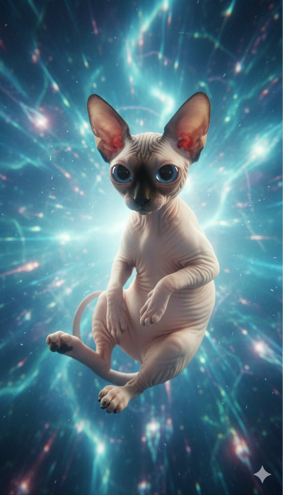
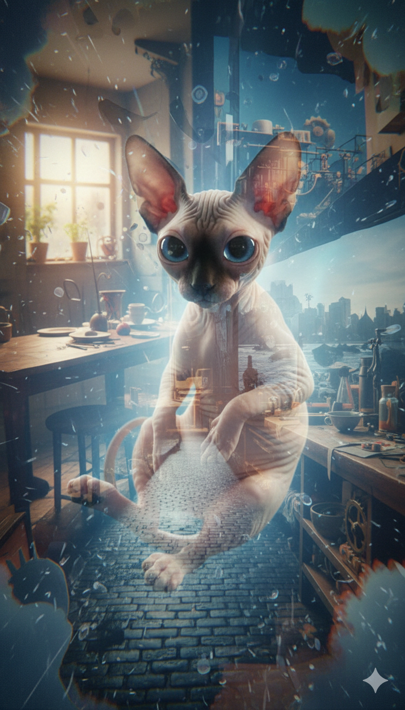
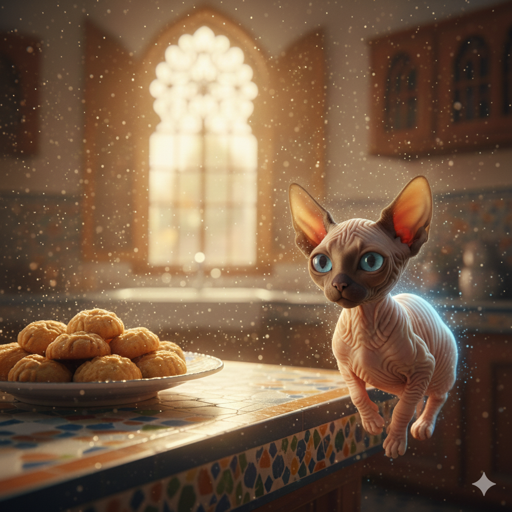
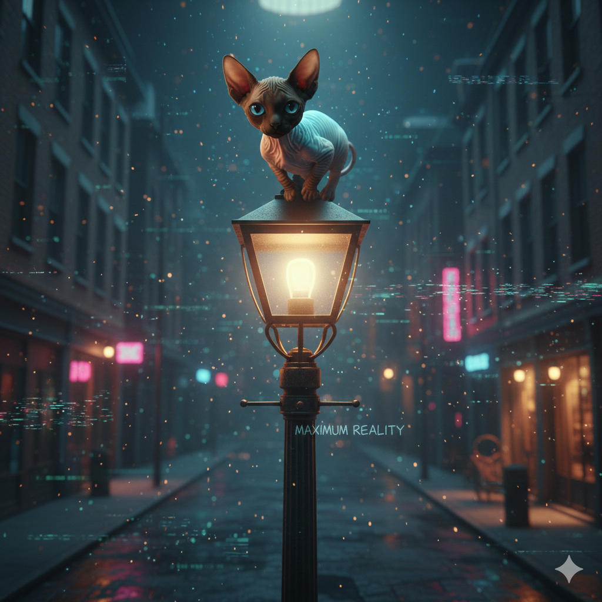
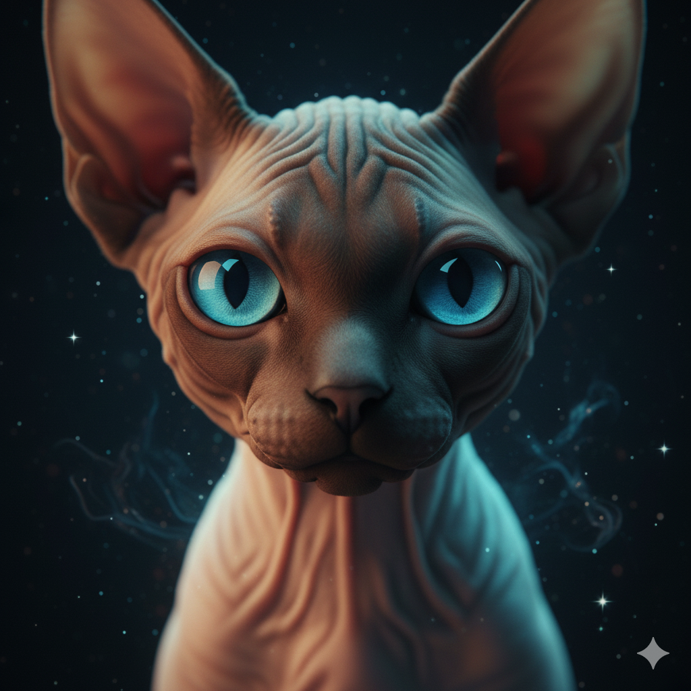
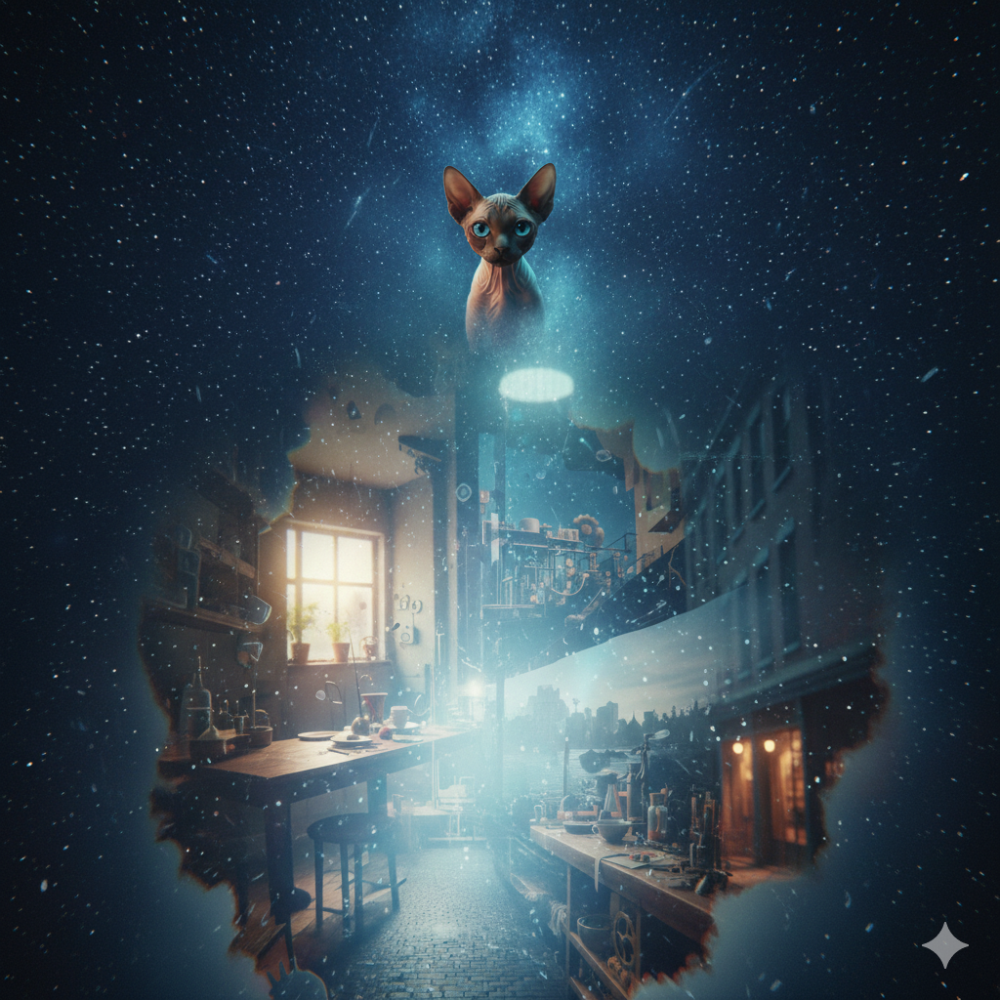

DATA_NODE: AZUL_FLOATSNot falling. Not flying. Just… there.
Light bends gently around him, as if the world has agreed to be polite.

Azul blinks.

ANOMALY_DETECTEDTwo shapes move too fast to track properly. There is chaos. There is sugar in the air.
Azul tilts his head. He does not intervene.

The words “Maximum Reality” faintly scratched into the metal pole. Subtle digital glitches in the environment.

EYE_CONTACT_INITIATEDA calm, knowing expression. Intimate, reflective, emotionally warm.

Azul drifts on. The world turns. Reality holds.